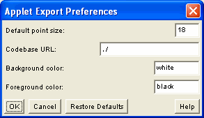

Applet Export Preferences
When placing a Viewer Control applet code on the clipboard, or saving
it to a file, it is necessary to set applet parameters to reflect the
way you use the Viewer Control on your site. The Applet Export
Preferences dialog lets you set values for these parameters:

-
Default point size
-
Sets the size for the base font in a Viewer Control equation when it
first displays. Any positive integer can be entered, but the Viewer
Control will round to the closest value in the list
8,10,12,14,16,18,24,30,36,48,64,72. Values are in points.
-
Codebase URL
-
An applet tag must specify the relative URL from the HTML document in which the applet tag appears to the WebEQ classes directory. The location of the classes is called the codebase. This options sets the value that will be generated in applet tags.
-
Background Color / Foreground Color
- You can set the background and foreground colors for the Math
Viewer via these property. If you haven't set colors directly in your
equation, it will inherit these background color from the Viewer Control.
Any color value can be used to specify these
parameters.